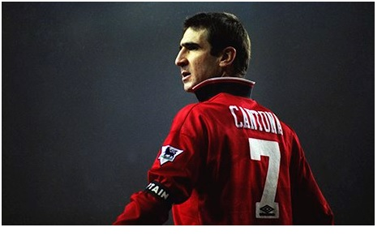
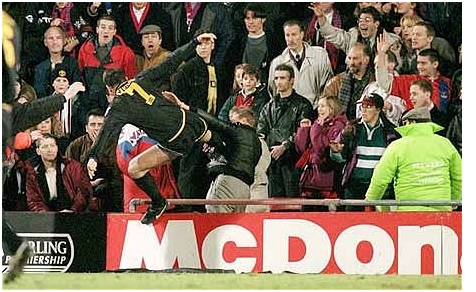

Chương 27

hi Manchester United lên ngôi sau 26 năm, giải VĐQG Anh đã mang một cái tên mới. Nguyên là từ mùa 1992-1993, các đội bóng mạnh nhất nước Anh đồng loạt thoát ly khỏi FL, tách ra thành lập một giải đấu riêng, gọi là giải Ngoại Hạng (Premier League). Từ đó trở đi, giải Ngoại Hạng tương đương với Hạng Nhất trước kia, còn giải mang tên Hạng Nhất nay thực tế là Hạng Nhì. Premier League ra đời, cũng đánh dấu sự khai sinh kỷ nguyên bóng đá thương mại. Hãng truyền hình Sky của tài phiệt truyền thông Rupert Murdoch trả cho các CLB số tiền “khủng” 303 triệu bảng để được quyền phát sóng các trận đấu Ngoại Hạng. Sky cũng mở chiến dịch PR, quảng cáo rầm rộ cho giải đấu mới. Góp tay cùng Sky, các tạp chí, nhật báo khác, đặc biệt là The Sun, ngày ngày quảng bá, khai thác các khía cạnh của Premier League, biến nó trở thành một siêu hiện tượng trong văn hóa giải trí. Chỉ sau vài năm, VĐQG Anh đã vươn lên thành giải đấu quốc nội được hâm mộ nhất hành tinh, đứng trên Serie A của Ý, Bundesliga của Đức, hay La Liga của TBN.
Là nhà vô địch Ngoại Hạng đầu tiên, đương nhiên United nhận được nhiều sự chú ý nhất; fan hâm mộ CLB trên khắp toàn cầu tăng nhanh chóng theo cấp số nhân. Nhận ra cơ hội kiếm tiền, Martin Edwards cho nâng cấp cửa hàng đồ lưu niệm nhỏ ở Old Trafford thành một trung tâm hoành tráng. Trước kia, cửa hàng bán không nhiều sản phẩm, quanh đi quẩn lại chỉ có áo, khăn choàng, huy hiệu, cốc chén in hình cầu thủ…nay thì đủ loại mặt hàng, đủ dòng sản phẩm ra đời, từ tập vở, chăn màn, đến ô dù, lốc lịch. Thượng vàng hạ cám, bất cứ thứ gì, cứ đóng vào logo United là ăn khách. Ngoài những hàng hóa mang thương hiệu United nói chung, CLB còn sản xuất các mặt hàng theo chủ đề từng cầu thủ. Bán chạy nhất là sản phẩm liên quan đến Eric Cantona và Ryan Giggs. Chỉ sau hai năm khai trương trung tâm, doanh thu hàng năm từ việc bán hàng lưu niệm đã đạt đến con số 20 triệu bảng.
Thừa thắng xông lên, United bỏ luôn phòng truyền thống nho nhỏ khi trước, đầu tư bốn triệu bảng xây một bảo tàng tân kỳ. Bảo tàng gồm ba tầng đồ sộ, có hẳn hệ thống nhà hàng, shopping và phòng chiếu phim riêng. Khu trưng bày được chia ra nhiều sảnh, theo từng chủ đề riêng biệt, nào là sảnh chứa các cúp và danh hiệu, sảnh các huyền thoại, sảnh về thảm họa Munich, sảnh giới thiệu áo thi đấu…Ngoài ra, còn có một văn khố chứa đầy đủ các tư liệu, hình ảnh về CLB từ ngày đầu thành lập, nhằm phục vụ cho giới nghiên cứu. Từ đấy, Old Trafford không chỉ là một SVĐ bóng đá, nó trở nên một “thánh địa” thu hút khách hành hương, một địa điểm du lịch hấp dẫn. Khách du lịch đến Manchester, nếu hâm mộ bóng đá, không thể không ghé Old Trafford. Mà ghé Old Trafford, không thể không đến trung tâm mua sắm kiếm đồ lưu niệm, đồng thời mua một tour tham quan bảo tàng.
Tóm tắt những đoạn trên, có thể nói rằng: Trong những năm đầu thành lập Premier League, giải vô địch Anh trở nên nổi bật nhất toàn cầu, mà nổi bật nhất giải Anh chính là Manchester United. Cả Premier League lẫn United đều thoát xácthànhnhững cỗ máy kiếm tiền siêu tốc. Ngôi sao lớn nhất của United, cũng là của Premier League trong thời kỳ này, không ai khác ngoài Eric Cantona.Ở Cantona hội tụ những yếu tố hấp dẫn để thu hút dư luận trong thời đại thông tin: Tài năng, cá tính, và scandal.
Trước khi đến Old Trafford, Cantona đã nổi danh là một cầu thủ lắm tài nhiều tật, trong đó phần tật có phần lấn át phần tài. Nóng tính, ngông nghênh, không cần biết trên đầu có ai, anh đi đến đâu là gây rối đến đấy. Bị thẻ đỏ, lĩnh án phạt, cãi HLV, đánh nhau cùng đồng đội, là chuyện thường thấy ở Cantona. Gây sự quá nhiều, hết đất sống tại Pháp, anh phải bán xới sang Anh, ký hợp đồng với Leeds United. Góp công lớn giúp Leeds VĐQG mùa 1991-1992, song Cantona không được lòng bất cứ ai. Anh cà khịa đồng đội, không nghe theo chỉ đạo của HLV Howard Wilkinson, mỗi lần bị thay ra sân thì nổi khùng. Thêm vào đó lại còn lười biếng, thường xuyên bỏ tập. Vậy nên khi United hỏi mua Cantona, Wilkinson đồng ý cái giá rẻ bèo một triệu bảng.
Đọc những thành tích bất hảo trên, không khỏi nghĩ rằng Cantona là kẻ vô giáo dục, nhưng thực chất, trong giới “quần đùi áo số”, anh thuộc hàng có văn hóa bậc nhất. Không mấy cầu thủ biết thưởng thức nhạc cổ điển, biết cầm cọ vẽ tranh trừu tượng như Cantona. Càng không mấy người say mê thơ của Arthur Rimbaud[1] hay đọc ngấu nghiến sách triết của Jean Paul Sartre[2]. Khi nói cũng như khi viết, Cantona hay dùng những hình ảnh ẩn dụ đầy ý vị, ngôn từ của anh mang đậm nét văn hoa, tinh tế của một trí thức đến từ đô thành ánh sáng. Có thể nói, trong Cantona, tồn tại những thái cực trái ngược, có cả thiên thần lẫn quỷ dữ. Nếu biết dùng anh, thiên thần sẽ hiện ra, còn không biết thì thấy toàn quỷ.
Alex Ferguson là người biết dùng Cantona. Tính tình nóng nảy, chủ trương kỷ luật thép, quân pháp nghiêm minh, song Ferguson hiểu rõ đối với thiên tài, cần có cách ứng xử ngoại lệ, để cho họ tự do như chim trời. Cantona mang dáng dấp oai phong, bệ vệ như một ông hoàng, ngực luôn ưỡn ra, đầu lúc nào cũng ngẩng cao ngạo nghễ.Đối với người như thế, Fergie biết mình không thể ra vẻkẻ cả. Trong lần gặp gỡ đầu tiên, ông không nói gì ngoài những lời ca ngợi Cantona, nào là ông đánh giá anh cực cao, nào là ông đã mong anh từ lâu lắm. Nhận thấyđược trân trọng, Cantona vô cùng hài lòng.
Những kẻ cao ngạo ít khi chấp nhận làm việc dưới quyền người khác, mà một khi đã chịu thì sẽ tận tâm tận lực. Cantona không ngoài lệ đó. Ở Elland Road, anh thường xuyên trốn tập, nhưng đến Old Trafford, cảm tấm thịnh tình của Ferguson, lại tập chăm chỉ ngày đêm. Sau mỗi buổi tập, Cantona đều ở lại tự rèn luyện thêm, trở thành tấm gương về đức cần cùcho đồng đội học theo. "Tập xong, chúng tôi hay rủ nhau đi chơi bi-da", Steve Bruce kể, "Riêng Eric vẫn tiếp tục miệt mài. Chú ấy chơi hay là nhờ nỗ lực hơn người như vậy, có phải ngẫu nhiên đâu". "Ai không biết, chứ tôi thì mỗi khi Eric xuất hiện, tôi chỉ chăm chú vào ảnh", David Beckham thổ lộ, "Tôi nhìn xem anh làm những gì, rồi bắt chước y theo. Có ảnh ở đó thì tôi không còn biết chuyện gì xảy ra chung quanh".
Thấy chiến thuật thành công, Ferguson lại càng cho Cantona “uống nước đường”, hết ngợi khen rồi đến động viên, khiến lòng tự cao của cầu thủ người Pháp được thỏa mãn. Nếu Cantona không chấn thương, Fergie hầu như không để anh ngồi ghế dự bị, hoặc thay ra giữa chừng. Cầu thủ khác được cưng chiều quá lố có thể sinh hư, riêng với Cantona, càng được “cưng”, anh càng ra sức trên sân để báo đáp ân tình của HLV.
Về mặt kỷ luật, Ferguson ít nhắc Cantona tuân thủnội quy. Trong lúc mọi người ai ai cũng phải tóc tai gọn ghẽ, Cantona tự do để râu xồm xoàm. Đi giao lưu với fan, cầu thủ đều bị bắt mặc đồ vest tề chỉnh, duy Cantona lông nhông áo phông quần bò. Sáng sáng, mỗi khi Cantona đến tập trễ, Ferguson chẳng nói, chẳng phạt gì. Như thế không phải Fergie không quản nổi Cantona. Trái lại, ông quản bằng “lạt mềm buộc chặt”,lấy nhu chế cương. Nhận thấy HLV tôn trọng, giành cho mình tự do tuyệt đối, Cantona cảm động, dần dần tự giác làm theo nội quy, không đợi ai phải bảo. Anh cạo râu sạch sẽ, nghiêm túc chấp hành mọi điều lệ. Từ chỗ hay đến muộn, nay anh không những có mặt đúng giờ, mà còn tới sớm hơn mọi người. Biểu hiện “vô kỷ luật” duy nhất còn lại ở Cantona là chiếc cổ áo dựng ngược một cách đỏm dáng.
Trên sân cỏ, Cantona là một biểu tượng của hiệu năng: Làm việc tuy ít, hiệu quả cực cao. Anh không di chuyển nhiều, bao khắp sân như kiểu Wayne Rooney, nhưng luôn xuất hiện đúng lúc, đúng chỗ. Anh không chuyền một trận trăm trái như Xavi, nhưng chuyền đường nào, sắc sảo đường nấy. Anh không thích chiêu trò phức tạp như Ariel Ortega, mà luôn chơi một cách đơn giản nhất có thể. Kỹthuật cá nhân của Cantona thuộc vào hạng siêu, có thể lừa qua hàng loạt cầu thủ như ai, song chỉ khi thật sự cần thiết, anh mới thể hiện nó: Những khi không cần thiết, không nên phí sức một cách vô bổ!Không lạ gì khi Cantona nhanh chóng chinh phục trái tim người hâm mộ Quỷ Đỏ. Sau Denis Law, anh là người thứ hai được họ đặt cho biệt danh “Nhà Vua”.
Trong sự nghiệp lẫy lừng ở Old Trafford, Alex Ferguson đã gây dựng cho United ba thế hệ cầu thủ tài năng, là các thế hệ 1993-1994, 1998-1999, và 2007-2008. Thế hệ 93-94 chỉ hoàn tất với cuộc chuyển nhượng Cantona từ Leeds. United trước Cantona như một bức họa rồng chưa điểm nhãn; rồng tuy rất đẹp nhưng hãy còn nằm trên giấy, chưa bay được lên. Cantona chính là nét chấm phá cuối cùng, là cặp mắt giúp rồng hóa ra “phi long tại thiên”, vút lên trời cao; là nhân tố thiết yếu giúp United đăng quang sau bao năm dài chờ đợi.

Eric Cantona (Ảnh: Theguardian.com)
Sau chức vô địch Ngoại Hạng, thay vì mua nhiều cầu thủ linh tinh, United dồn hết ngân sách chuyển nhượng vào tiền vệ Roy Keane của Nottingham Forest. Vì Liverpool cũng đang săn đuổi Keane ráo riết, Quỷ Đỏ phải bỏ ra 3.75 triệu bảng, mức giá kỷ lục toàn quốc, mới mua được anh. Có Keane, chất lửa tại United đã cao lại càng cao thêm. Phải nhận rằng so với thế hệ 98-99 hay 07-08, lứa 93-94 hơn hẳn về khoản… hung hăng. Schmeichel, Bruce, Ince, Robson, Hughes, Cantona và Keane đều là những “hỏa diệm sơn”, với quyết tâm chiến thắng bằng mọi giá. Quyết tâm này đem về danh hiệu, nhưng cũng dẫn tới nhiều thẻ vàng, thẻ đỏ.
Ferguson làm gì khi học trò lĩnh nhiều thẻ? Dĩ nhiên, mỗi lần họp nội bộ, ông cảnh cáo, bắt họ phải hạ bớt nhiệt xuống, song trước dư luận bên ngoài thì bảo vệ họ tới cùng. Như khi bình luận viên Jimmy Hill phê phán một pha đánh nguội của Cantona, gọi anh là kẻ ti tiện, Fergie liền đăng đàn phản pháo: “Jimmy Hill là thằng ngu, ai thèm quan tâm tới hắn. Bốn năm trước, hắn dám bảo nhìn chúng tôi khởi động đã biết sẽ thua, chứng tỏ hắn có biết gì về bóng đá đâu. Cái đài BBC của hắn thì lúc nào chả muốn chúng tôi thua. Cả lũ BBC là fan Liverpool hết.”
Ferguson là thế. Ông có thể “sấy” học trò tới bến trong phòng thay đồ, nhưng bước ra ngoài là bênh chằm chặp. Mỗi lần học trò phạm lỗi, ông kiếm cớ đổ lỗi ấy cho người khác: nhà báo, bình luận viên, hoặc trọng tài. Khi làm như vậy, ông nhắm tới hai mục đích. Thứ nhất: chuyển áp lực từ cầu thủ sang phía mình. Thay vì cầu thủ, dư luận sẽ tập trung sự chú ý vào Ferguson và chỉ trích ông. Thứ hai: kích động tinh thần học trò. Bằng việc ngày ngày phê phán trọng tài, truyền thông, và tất tần tật những người liên quan, Fergie tạo cho cầu thủ một tâm lý “bước đường cùng”, cảm thấy cả thế giới đều chống lại họ. Một khi ở vào “bước đường cùng”, sức chiến đấu sẽ tăng thêm gấp bội.
Sức chiến đấu của United trong mùa 1993-1994 vô cùng mãnh liệt. Mark Hughes tưởng đã qua đỉnh cao phong độ, lại bất ngờ hồi xuân nhờ được Cantona tiếp sức. Tính tất cả các giải, Cantona ghi 25 bàn, giành danh hiệu Cầu Thủ Xuất Sắc Nhất Nước Anh (PFA), Hughes bám sát theo sau với 22. Ngay những tiền vệ như Giggs, Kanchelskis và Sharpe đều có từ 10 bàn trở lên. Quỷ Đỏ dẫn đầu giải Ngoại Hạng từ vòng thứ tư, từ đó trở đi không bao giờ rơi xuống hạng hai. Đội vô địch với số điểm kỷ lục 92, phá lưới đối phương tổng cộng 80 lần. Đội hạng nhì là Blackburn chỉ có 84 điểm và 63 bàn thắng.
Lẽ ra khoảng cách giữa United và Blackburn còn xa hơn nhiều, nếu Cantona không lãnh liền hai thẻ đỏ, bị treo giò năm tuần. Giai đoạn vắng Cantona, United thi đấu chệch choạc ở cả giải VĐQG lẫn Cúp FA. Bán kết Cúp FA vào tháng 4, 1994, với Dion Dublin thế chỗ Cantona trên hàng công, Quỷ Đỏ chơi một trận đáng chán, để Oldham cầm hòa 0-0 sau 90 phút và vượt lên dẫn trước trong hiệp phụ. Mãi đến phút 119, Mark Hughes mới cứu vãn được tình thế bằng cú volley sở trường. Ba ngày sau tái đấu, United thắng 4-1. Trong trận này, Bryan Robson ghi bàn thắng thứ 99, cũng là bàn cuối cùng của mình cho CLB. Cuối mùa, vị thủ quân lâu năm nhất trong lịch sử Old Trafford sẽ rời Nhà Hát Những Giấc Mơ, chuyển đến làm cầu thủ kiêm HLV cho Middlesbrough.
Trận chung kết, Cantona tái xuất, United dễ dàng “làm gỏi” Chelsea. Nhà vua người Pháp lập cú đúp trên chấm phạt đền, rồi Hughes và McClair ghi thêm hai bàn, ấn định tỷ số đậm đà 4-0, giúp đội nhà giành cú đúp đầu tiên trong lịch sử. Đội hình chính thức giành Cúp FA 1994 gồm: Schmeichel, Parker, Bruce, Pallister, Irwin, Kanchelskis, Keane, Ince, Giggs, Cantona và Hughes. 11 cầu thủ này chỉ chơi cùng nhau vỏn vẹn 12 trận, nhưng trong 12 trận ấy, United toàn thắng, ghi 24 bàn, chỉ lọt lưới 3[3]. Về mặt thống kê, đây là đội hình xuất sắc nhất của Alex Ferguson trong 26 năm ông nắm quyền tại Old Trafford.
United năm 1994 suýt chút hoàn thành cú ăn ba vô tiền khoáng hậu, nếu không thất bại trước Aston Villa trong trận chung kết Cúp Liên Đoàn. Tuy nhiên, trên đấu trường Cúp C1, nay mang tên mới là Champions League, tình hình không mấy khả quan. Lần đầu trở lại giải đấu danh giá nhất châu Âu kể từ 1969, bỡ ngỡ đã đành, CLB còn gặp khó bởi quy định của UEFA, buộc mỗi đội chỉ được đưa ra sân tối đa năm cầu thủ nước ngoài. Alex Ferguson ban đầu không mấy quan tâm quy định, bởi ông ngỡ đội mình chỉ có ba người ngoại quốc là Cantona, Schmeichel và Kanchelskis. Đến khi biết theo định nghĩa của UEFA, cả cầu thủ Scotland, Wales, và Nam-Bắc Ireland cũng bị tính là nước ngoài, ông mới tá hỏa. Trong đội hình Quỷ Đỏ, Keane và Irwin là người Ireland, McClair và Darren Ferguson là người Scotland, còn Hughes và Giggs xứ Wales. Cộng thêm ba anh nước ngoài thực thụ đã kể, tất cả là chín.
Vậy là mỗi lần đá C1, Ferguson phải đau đầu tính toán lựa ai, bỏ ai, không bao giờ có được đội hình mạnh nhất. Gặp Galatasary (TNK) tại vòng hai, United hòa 3-3 nơi Old Trafford, 0-0 tại Ali Sami Yen, bị loại do luật bàn thắng sân khách. Trận này, Cantona cãi trọng tài, bị phạt thẻ đỏ. Trong lúc rời sân, anh còn bị cảnh sát TNK cho ăn thêm…dùi cui vào đầu!
Đến đây, độc giả có thể thấy rằng, tuy không thiếu cầu thủ giỏi, United giai đoạn này phụ thuộc khá nhiều vào Cantona. Việc vắng Cantona chẳng đơn giản là vắng đi một ngôi sao, nó còn gây ảnh hưởng đến tâm lý các cầu thủ khác, khiến họ bớt tự tin, do đó kết quả thường không như ý. Sự phụ thuộc thể hiện càng rõ vào mùa 1994-1995, sau vụ Cantona tung cú đá kung-fu gây “chấn động địa cầu”.
Vụ việc trên đã được sách báo nhắc tới quá nhiều. Trong cuốn Sir Alex Ferguson – Chân Dung Một Huyền Thoại, chúng tôi cũng từng tường thuật kỹ, nay chỉ xin nhắc lại chi tiết chính: Ngày 25 tháng 1, 1995, phút 49 trận Manchester United - Crystal Palace, Cantona nhận thẻ đỏ rời sân. Một tay hooligan Palace canh lúc anh đi ngang, hô lớn: “ĐM thằng người Pháp, cút mẹ mày về nước đi!” Cantona lập tức tung người như một võ sỹ, đá thẳng vào ngực kẻ miệt thị mình. Ngày hôm sau, cú đá của anh trở thành tin trang nhất, nóng hổi trên mọi phương tiện truyền thông. Báo lá cải The Sun giành hẳn…12 trang chỉ để đưa tin về nó. Cantona trở nên tội đồ. Mọi người xúm vào xỉ vả, đòi cấm anh thi đấu suốt đời. HLV lão làng Brin Clough thì bỡn cợt, đề nghị đem tiền đạo người Pháp ra…thiến!
Alex Ferguson lúc riêng tư thì phán “Nếu là tôi, tôi cũng làm như Eric”, nhưng ngoài mặt cũng không dám ủng hộ cầu thủ con cưng. Ông nhất trí với BLĐ United, treo giò Cantona bốn tháng, phạt tiền 10800 bảng. Cho rằng CLB tự xử chưa đủ nặng, FA phạt thêm 10000 nữa, cùng lúc cấm anh thi đấu đến tận tháng 10, năm 1995. Vì tội hành hung, Cantona còn bị tòa án tuyên hai tuần tù giam, sau giảm xuống 120 giờ lao động công ích.
Trong cuộc họp báo sau đó, được hỏi có suy nghĩ gì về việc đã làm, Cantona chiêu một ngụm nước, rồi thong thả nói nhấn từng từ, giọng đầy vẻ chế giễu:
- Hải âu theo tàu cá, mong đớp được cá mòi!
Cánh nhà báo mắt tròn mắt dẹt, chẳng hiểu đầu cua tai nheo chi!
Không Cantona, United như rắn mất đầu, lần đầu tiên trắng tay kể từ 1989. Đội về nhì, kém Blackburn một điểm ở giải Ngoại Hạng, và thua Everton trong trận chung kết Cúp FA. Hàng phòng ngự Quỷ Đỏ thật ra đã có một mùa bóng tuyệt vời. Ở giải VĐQG, họ chỉ để lọt đúng bốn bàn trên sân nhà; riêng thủ thành Schmeichel lập kỷ lục giữ trắng lưới trong 18 trận. Vấn đề nằm ở hàng công, nơi Hughes đá xìu hẳn khi không còn Cantona hỗ trợ. Đến Old Trafford vào tháng một, 1995, với giá bảy triệu bảng, Andy Cole bùng nổ, ghi năm bàn trong chiến thắng hủy diệt 9-0 trước Ipswich, nhưng sau đó cũng lu mờ dần[4]. Cuối mùa, cầu thủ ghi nhiều bàn nhất cho United lại là một tiền vệ: Andrei Kanchelskis, với 15 lần lập công tại các giải.

Cú đá kung fu đầy tai tiếng của Eric Cantona (Ảnh: Telegraph.co.uk)
Chú thích:
[1] Arthur Rimbaud (1854-1891): Đại thi hào Pháp, tác giả các tập thơ Một Mùa Địa Ngục (Une Saison en Enfer), Hoa Đăng (Illuminations)…
[2] Jean Paul Sartre (1905-1980): Nhà văn kiêm triết gia Pháp, giải Nobel văn chương 1964.
[3] Chung kết Cúp FA năm 1994 là lần cuối họ chơi cùng nhau, bởi sau đó Parker bị chấn thương phải nghỉ dài hạn, rồi theo thời gian, mỗi người đi một phương.
[4] Cole là vua phá lưới giải Ngoại Hạng mùa 1993-1994, với 34 bàn cho Newcastle. Giá chuyển nhượng chính xác của anh là 6 triệu bảng cộng thêm Keith Gillespie.